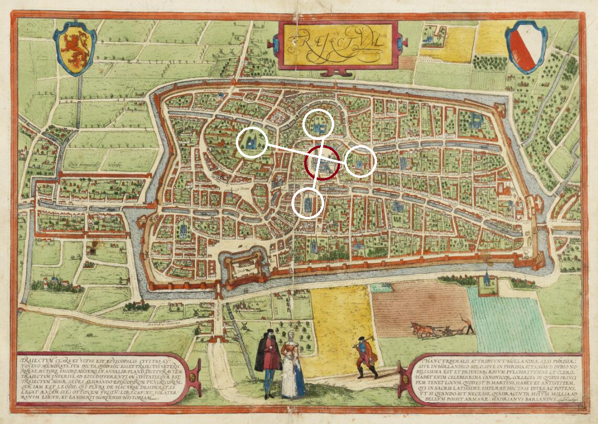

Dom Square: the central
point of Utrecht
The Dom Square is the epicentre of student activity in Utrecht and has been for almost four centuries. The university itself and many affiliated institutions have their roots on and around the square, which draws the attention of many different kinds of students.
The current Dom Square is located at the site where two millennia ago the Romans built their fort Trajectum, of which the name Utrecht is derived. Even after the Roman times, the site where the stronghold used to be remained the centre of what would later become the city of Utrecht.
Throughout the Middle Ages, the square functioned as the religious centre of the city, with the Dom Church forming the middle of the 'cross of churches' between the St. Mary, the St. John, the St. Paul and the St. Peter. Also the university of Utrecht and many of its affiliated institutions have their roots on and around the square, which has made the Dom Square the epicentre of student activity in Utrecht for the past four centuries.
Let's explore the square together!
